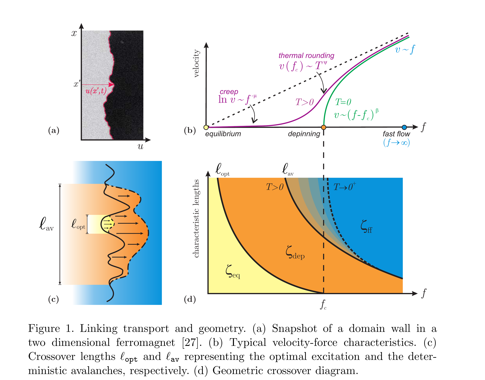
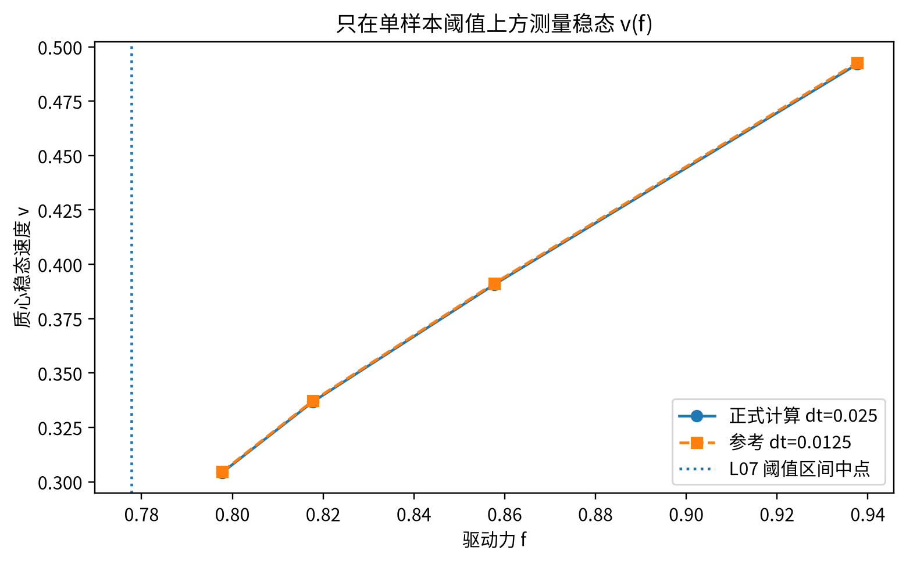
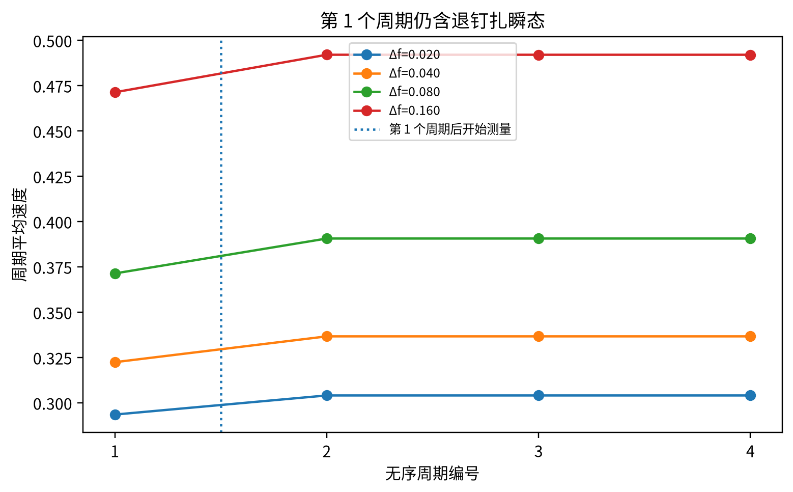
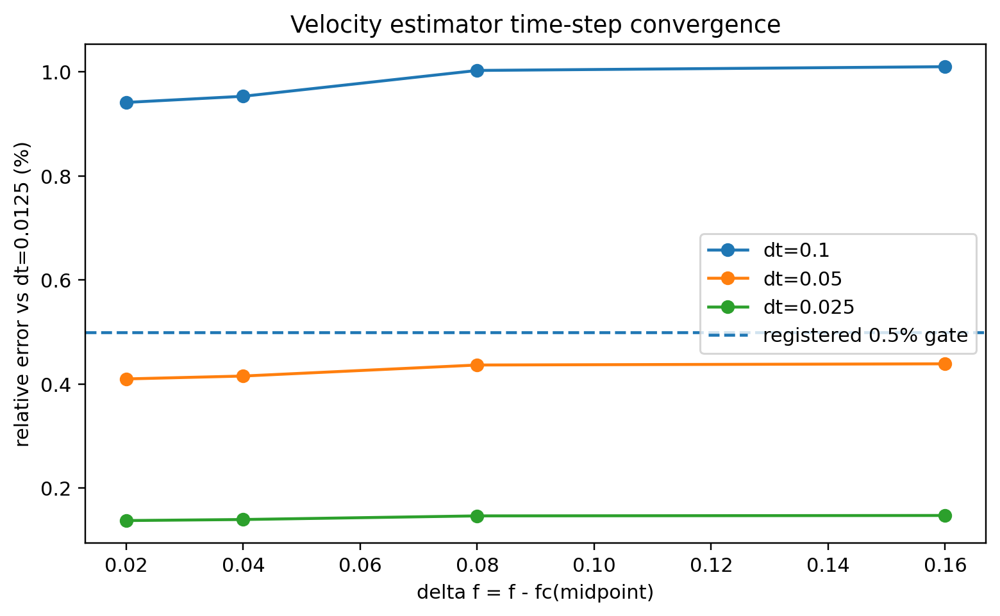
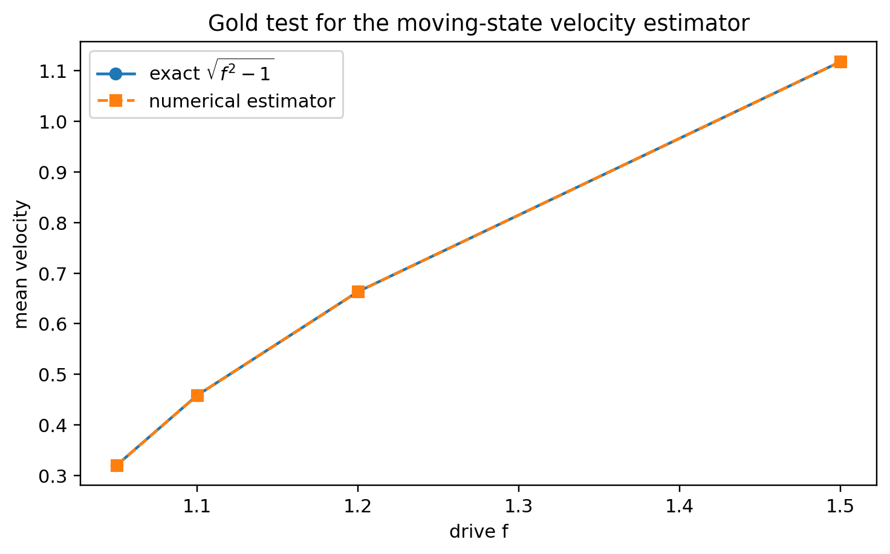

Learning Sliding Ferroelectricity / 复现实验室 / 第 08 课
稳态 v(f)瞬态剔除dt 收敛
论文画 v–f，我们这一课也只测 v–f
L07 只确定了单样本阈值区间。L08 的任务是把 steady velocity（稳态速度）v 测准，这里具体指 center-of-mass velocity（质心速度）。页面先给论文完整的速度–驱动力图，再给我们的真实 v(f) 数据；瞬态剔除与 dt 收敛检查只回答一个问题：这些速度点能不能作为后续临界分析的输入。
1 · 论文子图 b先读速度–驱动力上的动力学区间。
2 · 我们的 v(f)同样以 f 为横轴、稳态 v 为纵轴。
3 · 去除瞬态第 1 个无序周期不能计入稳态平均。
4 · dt 收敛正式计算的 dt 必须通过预设判据。
0 · 论文总图：v–f 上有哪些动力学区间？

1 · 我们实际测到的稳态 v(f)

同一观测量
质心稳态速度 v 随驱动力 f 的变化。
归一化不同
所以不能比较曲线绝对高度或 fc 数值。
L08 不拟合 β
先保证速度估计量稳定，临界拟合区间留给 L09。
2 · 为什么第一个无序周期必须丢掉？

第 1 个周期相对稳态平均值低约 3.47%–4.93%，而后 3 个周期的内部离散最大只有 0.0010%。所以“从 t=0 起用总位移除以总时间”会把退钉扎瞬态混入稳态速度。
3 · dt 收敛是实际数据，不是口头保证


4 · 本课结论
稳态速度估计量 + dt 收敛：通过。 可以把这些 v(f) 测量交给下一课做临界拟合区间审计。
本课不拟合 β。 单个样本、L=32、四个 Δf 点只够验证速度估计量，不足以证明临界标度。